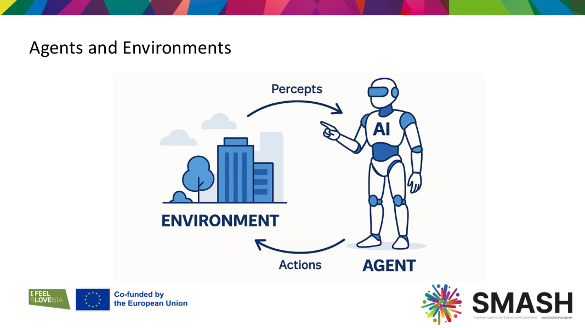
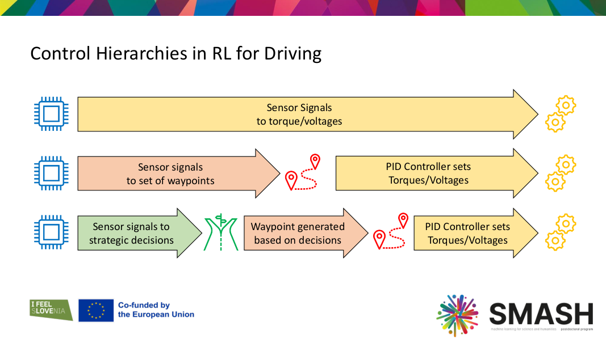

Teaching a car to learn from reward: a student seminar on reinforcement learning
This seminar was written for students who know some machine learning and want to see how reinforcement learning meets a real engineering problem, the driving of a vehicle. It is part of LANCER, my postdoctoral project at the University of Ljubljana. The slides plan four parts: the foundations of reinforcement learning (25 minutes), the vehicle as a system (10 minutes), reinforcement learning for vehicles in simulation (15 minutes) and the open gaps (10 minutes). The aim stated on the outline slide is to move from the theory of Markov decision processes to safe navigation in simulated, chaotic environments.
What learning means
The seminar begins with three ways of learning, each defined by what the teacher provides. In supervised learning there are desired outputs, and the aim is to minimise error. In unsupervised learning there are only familiar patterns, and the aim is to maximise similarity. Reinforcement learning has neither data nor labelled answers, only a place to work, and the rule is try, fail, adapt. An agent acts in an environment, receives percepts and acts again.

The maths in brief
The formal frame is the Markov decision process. Its defining property is that the future is independent of the past, given the present. The state is a snapshot of everything relevant at time t; for a car it is a vector with the vehicle's coordinates, speed and the relative positions of other road users. The value of a state tells how good it is, and a policy says what to do in it. The slides derive the Bellman optimality equation, where the best action maximises the reward plus the discounted value of the next state, and the Bellman expectation equation for a given policy. The expectation equation is implemented as iterative policy evaluation, which the seminar shows with pseudocode and a notebook.
Choosing an algorithm
The seminar sorts methods along four axes: what the agent knows about the world (model-based or model-free), how it optimises (value-based, policy-based or a hybrid), the nature of learning (on-policy or off-policy) and scope (tabular or deep). It then lists considerations for choosing one: value or policy based, on or off policy, discrete or continuous actions, model-free or model-based, exploration against exploitation, stability against plasticity, episodic or continuing tasks, and stationary or non-stationary environments.
| Algorithm | Category | On-policy? | Model-free? | Discrete action? | Continuous action? | Key mechanism |
|---|---|---|---|---|---|---|
| Q-Learning | Value-Based | N | Y | Y | N | Tabular Q-estimates |
| SARSA | Value-Based | Y | Y | Y | N | Q(s,a) updates using next action |
| DQN | Deep Value | N | Y | Y | N | Replay Buffer & Target Network |
| REINFORCE | Policy Gradient | Y | Y | Y | Y | Monte Carlo policy updates |
| A2C / A3C | Actor-Critic | Y | Y | Y | Y | Synchronous/Asynchronous updates |
| TRPO | Policy Gradient | Y | Y | Y | Y | KL-Divergence trust regions |
| PPO | Policy Gradient | Y | Y | Y | Y | Clipped surrogate objective |
| DDPG | Actor-Critic | N | Y | N | Y | Deterministic Policy + Replay Buffer |
| TD3 | Actor-Critic | N | Y | N | Y | Addresses overestimation in DDPG |
| SAC | Actor-Critic | N | Y | Y* | Y | Maximum Entropy framework |
| Dyna-Q | Hybrid | N | N | Y | N | Learns model + simulated planning |
| AlphaZero | Model-Based | N | N | Y | N | MCTS + Policy/Value Networks |
| PETS | Model-Based | N | N | N | Y | Probabilistic Ensembles with MPC |
| Dreamer (v1-3) | Model-Based | N | N | Y | Y | Latent World Model planning |
Read the table by what a driving agent needs. Throttle and steering are continuous, so the methods with a yes in the last column are the candidates, and among those PPO, with its clipped objective, stands out in the slides for keeping updates from pushing the policy into a collapsed state. A slide of variants adds AlphaZero, MuZero, Double, Dueling and Rainbow DQN, Expected SARSA, TRPO and others.
The vehicle as a system
The second part reviews the SAE automation levels and the classic sense, plan, act stack. Sensing uses LiDAR for 3D shape and distance, cameras for texture, signs and lights, radar for distance and speed in bad weather, and ultrasonic sensors for low-speed maneuvers, plus sensors that observe the vehicle itself. Planning runs on GPUs, TPUs or custom chips, moving from many separate control units to a centralised domain controller that fuses sensor data. Acting goes through drive-by-wire: steer-by-wire, brake-by-wire and electronic throttle control, with a human-machine interface.
Reinforcement learning for driving
The bridge between the two parts is the case for reward. We do not want to tell the car how to drive, we want to tell it what good driving looks like. The slides choose the level at which the agent acts: sensor signals straight to torque and voltage, signals to a set of waypoints followed by a PID controller, or signals to strategic decisions that produce waypoints and then torques.

The observation space and action space mirror the research talk. Actions are continuous, with throttle and brake in [0, 1] and steering in [-1, 1], or discrete, with presets such as stay in lane and change lane. Continuous actions give smooth driving but are harder to explore, and the agent may at first vibrate the steering wheel. Discrete actions simplify learning but give jerky movement and cannot handle fine emergency steering. Safety constraints include clipping actions and penalising rapid changes in them.
The difficulty of a reward that arrives only at the end of a long drive has its own slide, with the remedy of reward shaping.
| Feature | Long-term episodic reward | Short-term / immediate reward |
|---|---|---|
| Timing | Delivered only at the end of the episode. | Delivered at every single time step (t). |
| Objective | Mission success or failure. | Behavioral alignment and safety. |
| Example 1 | Completion: +100 for reaching the final GPS destination safely. | Progress: +0.5 for every meter traveled along the center of the lane. |
| Example 2 | Survival: +50 for finishing a 5-minute drive without any collisions. | Safety: -1.0 for every frame where the car is too close to a pedestrian (Time-to-Collision). |
| Example 3 | Efficiency: A bonus based on the total time taken for the whole trip. | Comfort: -0.1 for high lateral G-forces or sudden "jerky" braking. |
The seminar closes this part with simulation: crashes are free, many copies run in parallel, scenarios can be scripted, and realistic physics, photorealistic rendering and programmable traffic make a policy more likely to work on a real car. The tools shown are HighwayEnv, CARLA, SUMO and MetaDrive.
Discussion
The last part lists gaps, opportunities and threats. The technical gaps are long-tailed events, extreme weather, entropy in traffic, data scarcity, reaction time and communication, and the others are cognitive, infrastructure and regulatory. The opportunities are mobility as a service, logistics, safety and a dense-city market, and the threats are security, trust, labour and ethics. The final slide says that driverless vehicles are not a question of if but of when.
The seminar is teaching material, not a study, so it reports no experiments. The reward values and the algorithm table are examples and reference, and the slides give no results for any of the algorithms on driving. What it prepares is the work of the project: choosing a continuous-control method, shaping a reward and training in a simulator. The simulator side is described in the dataset article, and the wider picture in the research talk.
Sources
The figures and tables listed here are taken from the seminar cited at the top of this page; the numbers quoted in the text come from it too.
- Figures: Slide 9 of the seminar, Slide 51 of the seminar
Acknowledgements
LANCER is part of the postdoctoral project of Dr. Swarnendu Ghosh at the University of Ljubljana. It is co-funded by the European Union's Horizon Europe research and innovation programme under the Marie Skłodowska-Curie COFUND Postdoctoral Programme, grant agreement No. 101081355 (SMASH), and by the Republic of Slovenia and the European Union from the European Regional Development Fund. Views and opinions expressed are those of the author only and do not necessarily reflect those of the European Union or the European Research Executive Agency. Neither the European Union nor the granting authority can be held responsible for them.
Cite the seminar
Swarnendu Ghosh (2026). Vehicular Automation with Reinforcement Learning Agents. LANCER project, student seminar, slides.
@misc{ghosh2026lancerseminar,
author = {Ghosh, Swarnendu},
title = {Vehicular Automation with Reinforcement Learning Agents},
howpublished = {Student seminar, LANCER project, University of Ljubljana},
year = {2026},
note = {Slides: https://swarnendughosh.com/LANCER/Student\%20Seminar\%20-\%20VARLA.pdf}
}